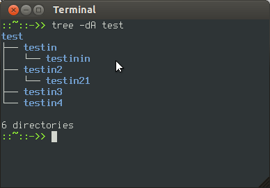

В Ubuntu существует два вида интерфейса: графический интерфейс пользователя и интерфейс командной строки.
Графический интерфейс пользователя (англ. Graphical user interface, GUI). - управление программами с помощью графических кнопок, всплывающих меню, окон и других элементов. Множество действий можно выполнять с помощью мыши.
Преимущества: визуальное отображение программ и их содержимого, возможности программ можно изучать без чтения документации.
Интерфейс командной строки (англ. Command Line Interface, CLI). - управление программами с помощью команд. Команды состоят из букв, цифр, символов, набираются построчно, выполняются после нажатия клавиши Enter. Основной инструмент здесь клавиатура.
Данный интерфейс встроен в ядро системы, он будет доступен, даже если графический интерфейс не запустится.
Преимущества: небольшой расход ресурсов, гибкость при составлении перечня действий из команд, возможность автоматического выполнения команд, возможность копировать и вставлять команды.
Если сравнивать интерфейсы в разных системах, то можно заметить, что основные команды одинаковы во всех дистрибутивах семейства Linux, а вот графические программы в каждой системе могут очень сильно различаться.
Добраться до командной строки можно двумя способами: через консоль или терминал.
Консоль
{kind=link}
Во время загрузки Ubuntu запускаются семь полноэкранных консолей, у каждой свой независимый сеанс, с первой по шестую с интерфейсом командной строки, в седьмой запускается графический режим. Пользователь во время загрузки видит только графический режим.
Переключиться на одну из виртуальных консолей можно нажав сочетание клавиш:
Ctrl+Alt+F1 - первая виртуальная консоль;
Ctrl+Alt+F2 - вторая виртуальная консоль;
Ctrl+Alt+F3 - третья виртуальная консоль;
Ctrl+Alt+F4 - четвертая виртуальная консоль;
Ctrl+Alt+F5 - пятая виртуальная консоль;
Ctrl+Alt+F6 - шестая виртуальная консоль;
Ctrl+Alt+F7 - седьмая виртуальная консоль, возврат в графический режим.
Терминал
{kind=link}
Терминал - графическая программа эмулирующая консоль.
Такие программы позволяют не выходя из графического режима выполнять команды.
Терминал по сравнению с консолью имеет дополнительный функционал (различные настройки, вкладки, можно запускать много окон, управление мышью в некоторых программах, контекстное меню, главное меню, полоса прокрутки).
Запустить терминал можно следующим образом:
В Unity:
Главное меню → Набрать в поисковой строке слово Терминал
или нажать комбинацию клавиш: Ctrl+Alt+T
В Gnome Fallback
Приложения → Стандартные → Терминал
В Xfce (Xubuntu):
Главное меню → Приложения → Система → Терминал
В KDE (Kubuntu):
Главное меню → Приложения → Система → Терминал
В LXDE (Lubuntu):
Главное меню → Системные → LXTerminal
После запуска терминала мы видим строку с приглашением к вводу команд, например:
vladimir@Zotac-Zbox-Nano:~$
vladimir - имя учетной записи пользователя
@ - разделитель
Zotac-Zbox-Nano - имя компьютера
: - разделитель
~ - в какой папке выполняется команда, ~ это домашняя папка пользователя, если выполните команду ls то получите список файлов из этой паки
$ - приглашение к выполнению команды с правами простого пользователя (# будет означать приглашение на выполнение команд с правами администратора)
Горячие клавиши
Копирование команд
Часто вам придётся следовать каким-либо инструкциям, которые требуют копирования команд в терминал. Наверное, вы удивитесь, когда обнаружите, что текст, скопированный вами с интернет-страницы при помощи комбинации клавиш Ctrl+C, не вставляется в терминал при нажатии Ctrl+V. И что, неужели придётся перепечатывать все эти команды и имена файлов вручную? Нет, расслабьтесь! Вставить текст в терминал можно тремя способами: Ctrl+Shift+V, нажатием средней кнопки мыши или правой кнопки мыши и выбором строки «Вставить».
Экономия набора
| ↑ или Ctrl+P | прокрутка недавно использованных команд вверх |
| ↓ или Ctrl+N | прокрутка недавно использованных команд вниз |
| Enter | выполнение выбранной команды |
| Tab | крайне удобная возможность - автозаподстановка команд и имён файлов. Если с выбранных символов начинается только одна команда, подставится именно она, а если их несколько,то по двойному нажатию tab выведется список всех возможных вариантов. |
| Ctrl+R | поиск по командам, которые вы вводили раньше. Если вам нужно повторно выполнить очень длинную и сложную команду, вы можете ввести только её часть, а эта комбинация клавиш поможет найти команду целиком. |
| History | Команда history выводит список всех команд, которые вы вводили. Каждой команде будет присвоен номер. Чтобы выполнить команду под номером x, просто введите »!x». Если у вас получилась слишком длинная история, можно попробовать «history I less», это сделает список прокручиваемым. |
Изменение текста
Здесь мышь не работает. Используйте стрелки влево/вправо, чтобы перемещаться по строке.
Ввод с клавиатуры будет добавлять символы. Существующий текст удаляться не будет.
| ctrl+a или Home | перемещает курсор в начало строки |
| ctrl+e или End | перемещает курсор в конец строки |
| ctrl+b | перемещает курсор в начало предыдущего или текущего слова |
| ctrl+k | удаляет текст с текущей позиции курсора до конца строки |
| ctrl+u | удаляет всю текущую строку |
| ctrl+w | удаляет слово перед курсором |
Программная оболочка
Консоль и терминал обрабатывают команды с помощью программной оболочки.
Программная оболочка - интерпретатор команд, он распознает команды введенные в командной строке, и запускает программы для выполнения команды.
В Ubuntu по умолчанию используется оболочка bash, он распознает команды на языке bash.
Bash можно заменить на другую оболочку, их существует несколько. Каждая оболочка имеет свой набор настроек и возможностей.
(автовыполнение команд при входе в оболочку, внутренние команды оболочки, ведение истории, можно назначать сокращенные команды - алиасы).
Команды
Команды - это предопределенный набор букв, цифр, символов, которые можно ввести в командной строке и выполнить нажав энтер.
Команды делятся на два вида:
- команды встроенные в программную оболочку (например history)
- команды управляющие программами, установленными в системе
Команды для управления программами строятся по такой схеме:
название_программы -ключ значение
Название програмы - это название исполняемого файла из каталогов записанных в переменной $PATH (/bin, /sbin, /usr/bin, /usr/sbin, /usr/local/bin, /usr/local/sbin и др.) или полный путь к исполняемому файлу (/opt/deadbeef/bin/deadbeef)
Ключ - пишется после названия программы, например -h, у каждой программы свой набор ключей, они перечислены в справке к программе, ключи используются для указания какие настройки использовать или какое действие выполнить
Значение - адрес, цифры, текст, спецсимволы (*, ~, \, &, » », _ ), переменные ($HOME, $USER, $PATH)
Выполнить команды можно следующим образом:
- набрать команду в командной строке и нажать Enter
- скопировать команду из инструкции и вставить ее в командную строку, затем нажать Enter
- создать скрипт и выполнить двойным нажатием мыши (создать текстовый файл, в первой строке написать #!/bin/bash, ниже написать команды в столбик, сохранить, в свойствах файла разрешить выполнение, нажать два раза по файлу для выполнения всех перечисленных команд)
Шпаргалка команд
Файловые команды
| cd ../.. | перейти в директорию двумя уровнями выше |
| cd | перейти в домашнюю директорию |
| cd ~user | перейти в домашнюю директорию пользователя user |
| cd - | перейти в директорию, в которой находились до перехода в текущую директорию |
| pwd | показать текущюю директорию |
| mkdir dir | создать каталог dir |
| mkdir dir1 | создать директорию с именем 'dir1' |
| mkdir dir1 dir2 | создать две директории одновременно |
| mkdir -p /tmp/dir1/dir2 | создать дерево директорий |
| rm file | удалить file |
| rm -r dir | удалить каталог dir |
| rm -f file | удалить форсированно file |
| rm -rf dir | удалить форсированно каталог dir |
| rm -f file1 | удалить файл с именем 'file1' |
| rmdir dir1 | удалить директорию с именем 'dir1' |
| rm -rf dir1 | удалить директорию с именем 'dir1' и рекурсивно всё её содержимое |
| rm -rf dir1 dir2 | удалить две директории и рекурсивно их содержимое |
| cp file1 file2 | скопировать file1 в file2 |
| cp -r dir1 dir2 | скопировать dir1 в dir2; создаст каталог dir2, если он не существует |
| cp dir/ | копировать все файлы директории dir в текущую директорию |
| cp -a /tmp/dir1 | копировать директорию dir1 со всем содержимым в текущую директорию |
| cp -a dir1 dir2 | копировать директорию dir1 в директорию dir2 |
| mv dir1 new_dir | переименовать или переместить файл или директорию |
| mv file1 file2 | переименовать или переместить file1 в file2. если file2 существующий каталог - переместить file1 в каталог file2 |
| ln -s file1 lnk1 | создать символическую ссылку на файл или директорию |
| ln file1 lnk1 | создать «жёсткую» (физическую) ссылку на файл или директорию |
| touch file | создать file |
| touch -t 0712250000 fileditest | модифицировать дату и время создания файла, при его отсутствии, создать файл с указанными датой и временем (YYMMDDhhmm) |
| cat > file | направить стандартный ввод в file |
| more file | вывести содержимое file |
| head file | вывести первые 10 строк file |
| tail file | вывести последние 10 строк file |
| tail -f file | вывести содержимое file по мере роста, начинает с последних 10 строк |
Архивация
| tar cf file.tar files | создать tar-архив с именем file.tar содержащий files |
| tar xf file.tar | распаковать file.tar |
| tar czf file.tar.gz files | создать архив tar с сжатием Gzip |
| tar xzf file.tar.gz | распаковать tar с Gzip |
| tar cjf file.tar.bz2 | создать архив tar с сжатием Bzip2 |
| tar xjf file.tar.bz2 | распаковать tar с Bzip2 |
| gzip file | сжать file и переименовать в file.gz |
| gzip -d file.gz | разжать file.gz в file |
| bunzip2 file1.bz2 | разжимает файл 'file1.gz' |
| gzip -9 file1 | сжать файл file1 с максимальным сжатием |
| rar a file1.rar test_file | создать rar-архив 'file1.rar' и включить в него файл test_file |
| rar a file1.rar file1 file2 dir1 | создать rar-архив 'file1.rar' и включить в него file1, file2 и dir1 |
| rar x file1.rar | распаковать rar-архив |
| tar -cvf archive.tar file1 | создать tar-архив archive.tar, содержащий файл file1 |
| tar -cvf archive.tar file1 file2 dir1 | создать tar-архив archive.tar, содержащий файл file1, file2 и dir1 |
| tar -tf archive.tar | показать содержимое архива |
| tar -xvf archive.tar | распаковать архив |
| tar -xvf archive.tar -C /tmp | распаковать архив в /tmp |
| tar -cvfj archive.tar.bz2 dir1 | создать архив и сжать его с помощью bzip2(Прим.переводчика. ключ -j работает не во всех *nix системах) |
| tar -xvfj archive.tar.bz2 | разжать архив и распаковать его(Прим.переводчика. ключ -j работает не во всех *nix системах) |
| tar -cvfz archive.tar.gz dir1 | создать архив и сжать его с помощью gzip |
| tar -xvfz archive.tar.gz | разжать архив и распаковать его |
| zip file1.zip file1 | создать сжатый zip-архив |
| zip -r file1.zip file1 file2 dir1 | создать сжатый zip-архив и со включением в него нескольких файлов и/или директорий |
| unzip file1.zip | разжать и распаковать zip-архив |
Работа с локальными deb-пакетами (dpkg)
deb — расширение имён файлов «бинарных» пакетов для распространения и установки программного обеспечения в ОС проекта Debian, и других, использующих систему управления пакетами dpkg. Deb — это часть слова Debian, в свою очередь, образованного от слов Debra — имени подруги (впоследствии — жены, ныне — бывшей) основателя Дебиана Яна Мердока и Ian от его собственного имени.
| dpkg -i package.deb | установить / обновить пакет |
| dpkg -r package_name | удалить пакет из системы |
| dpkg -l | показать все пакеты, установленные в систему |
| dpkg -l | grep httpd | среди всех пакетов, установленных в системе, найти пакет содержащий в своём имени «httpd» |
| dpkg -s package_name | отобразить инфрмацию о конкретном пакете |
| dpkg -L package_name | вывести список файлов, входящих в пакет, установленный в систему |
| dpkg –contents package.deb | отобразить список файлов, входящих в пакет, который ешё не установлен в систему |
| dpkg -S /bin/ping | найти пакет, в который входит указанный файл |
Использование пакетного менеджера Apt
apt (advanced packaging tool) — программа для установки, обновления и удаления программных пакетов в операционных системах Debian и основанных на них (Ubuntu, Linux Mint и т. п.), иногда также используется в дистрибутивах, основанных на Mandrake, например Mandriva, ALTLinux и PCLinuxOS. Способна автоматически устанавливать и настраивать программы для UNIX-подобных операционных систем как из предварительно откомпилированных пакетов, так и из исходных кодов.
| apt-get install package_name | установить / обновить пакет |
| apt-cdrom install package_name | установить / обновить пакет с cdrom'а |
| apt-get update | получить обновлённые списки пакетов |
| apt-get upgrade | обновить пакеты, установленные в систему |
| apt-get remove package_name | удалить пакет, установленный в систему с сохранением файлов конфигурации |
| apt-get purge package_name | удалить пакет, установленный в систему с удалением файлов конфигурации |
| apt-get check | проверить целостность зависимостей |
| apt-get clean | удалить загруженные архивные файлы пакетов |
| apt-get autoclean | удалить старые загруженные архивные файлы пакетов |
Просмотр содержимого файлов
| cat file1 | вывести содержимое файла file1 на стандартное устройсво вывода |
| tac file1 | вывести содержимое файла file1 на стандартное устройсво вывода в обратном порядке (последняя строка становиться первой и т.д.) |
| more file1 | постраничный вывод содержимого файла file1 на стандартное устройство вывода |
| less file1 | постраничный вывод содержимого файла file1 на стандартное устройство вывода, но с возможностью пролистывания в обе стороны (вверх-вниз), поиска по содержимому и т.п. |
| head -2 file1 | вывести первые две строки файла file1 на стандартное устройство вывода. По-умолчанию выводится десять строк |
| tail -2 file1 | вывести последние две строки файла file1 на стандартное устройство вывода. По-умолчанию выводится десять строк |
| tail -f /var/log/messages | выводить содержимое файла /var/log/messages на стандартное устройство вывода по мере появления в нём текста |
Манипуляции с текстом
| cat file_originale | [operation: sed, grep, awk, grep и т.п.] > result.txt | общий синтаксис выполнения действий по обработке содержимого файла и вывода результата в новый |
| cat file_originale | [operazione: sed, grep, awk, grep и т.п.] » result.txt | общий синтаксис выполнения действий по обработке содержимого файла и вывода результата в существующий файл. Если файл не существует, он будет создан |
| grep Aug /var/log/messages из файла '/var/log/messages' | отобрать и вывести на стандартное устройство вывода строки, содержащие «Aug» |
| grep ^Aug /var/log/messages из файла '/var/log/messages' | отобрать и вывести на стандартное устройство вывода строки, начинающиеся на «Aug» |
| grep [0-9] /var/log/messages из файла '/var/log/messages' | отобрать и вывести на стандартное устройство вывода строки, содержащие цифры |
| grep Aug -R /var/log/* | отобрать и вывести на стандартное устройство вывода строки, содержащие «Aug», во всех файлах, находящихся в директории /var/log и ниже |
| sed 's/stringa1/stringa2/g' example.txt | в файле example.txt заменить «string1» на «string2», результат вывести на стандартное устройство вывода |
| sed '/^$/d' example.txt | удалить пустые строки из файла example.txt |
| sed '/ *#/d; /^$/d' example.txt | удалить пустые строки и комментарии из файла example.txt |
| echo 'esempio' | tr '[:lower:]' '[:upper:]' | преобразовать символы из нижнего регистра в верхний |
| sed -e '1d' result.txt | удалить первую строку из файла example.txt |
| sed -n '/string1/p' | отобразить только строки содержашие «string1» |
| sed -e 's/ *$' example.txt |удалить пустые символы в в конце каждой строки | |sed -e 's/string1g' example.txt | удалить строку «string1» из текста не изменяя всего остального |
| sed -n '1,8p;5q' example.txt | взять из файла с первой по восьмую строки и из них вывести первые пять |
| sed -n '5p;5q' example.txt | вывести пятую строку |
| sed -e 's/0*/0/g' example.txt | заменить последовательность из любого количества нулей одним нулём |
| cat -n file1 | пронумеровать строки при выводе содержимого файла |
| cat example.txt | awk 'NR%2==1' | при выводе содержимого файла, не выводить чётные строки файла |
| echo a b c | awk '{print $1}' | вывести первую колонку. Разделение, по-умолчанию, по проблелу/пробелам или символу/символам табуляции |
| echo a b c | awk '{print $1,$3}' | вывести первую и треью колонки. Разделение, по-умолчанию, по проблелу/пробелам или символу/символам табуляции |
| paste file1 file2 | объединить содержимое file1 и file2 в виде таблицы: строка 1 из file1 = строка 1 колонка 1-n, строка 1 из file2 = строка 1 колонка n+1-m |
| paste -d '+' file1 file2 | объединить содержимое file1 и file2 в виде таблицы с разделителем »+» |
| sort file1 file2 | отсортировать содержимое двух файлов |
| sort file1 file2 | uniq | отсортировать содержимое двух файлов, не отображая повторов |
| sort file1 file2 | uniq -u | отсортировать содержимое двух файлов, отображая только уникальные строки (строки, встречающиеся в обоих файлах, не выводятся на стандартное устройство вывода) |
| sort file1 file2 | uniq -d | отсортировать содержимое двух файлов, отображая только повторяющиеся строки |
| comm -1 file1 file2 | сравнить содержимое двух файлов, не отображая строки принадлежащие файлу 'file1' |
| comm -2 file1 file2 | сравнить содержимое двух файлов, не отображая строки принадлежащие файлу 'file2' |
| comm -3 file1 file2 | сравнить содержимое двух файлов, удаляя строки встречающиеся в обоих файлах |
Преобразование наборов символов и файловых форматов
| dos2unix filedos.txt fileunix.txt | конвертировать файл текстового формата из MSDOS в UNIX (разница в символах возврата каретки) |
| unix2dos fileunix.txt filedos.txt | конвертировать файл текстового формата из UNIX в MSDOS (разница в символах возврата коретки) |
| recode ..HTML < page.txt > page.html | конвертировать содержимое тестового файла page.txt в html-файл page.html |
| recode -l | more | вывести список доступных форматов |
Анализ файловых систем
| badblocks -v /dev/hda1 | проверить раздел hda1 на наличие bad-блоков |
| fsck /dev/hda1 | проверить/восстановить целостность linux-файловой системы раздела hda1 |
| fsck.ext2 /dev/hda1 | проверить/восстановить целостность файловой системы ext2 раздела hda1 |
| e2fsck -j /dev/hda1 | проверить/восстановить целостность файловой системы ext3 раздела hda1 с указанием, что журнал расположен там же |
| fsck.ext3 /dev/hda1 | проверить/восстановить целостность файловой системы ext3 раздела hda1 |
| fsck.vfat /dev/hda1 | проверить/восстановить целостность файловой системы fat раздела hda1 |
Монтирование файловых систем
Монтирование файловой системы — процесс, подготавливающий раздел диска к использованию операционной системой.
Операция монтирования состоит из нескольких этапов:
- определение типа монтируемой системы
- проверка целостности монтируемой системы
- считывание системных структур данных и инициализация соответствующего модуля файлового менеджера (драйвера файловой системы)
- установка флага, сообщающего об окончании монтирования. При корректном размонтировании этот флаг сбрасывается. Если при загрузке система определяет, что флаг не сброшен, значит работа была завершена некорректно, и возможно ФС нуждается в починке
- включение новой файловой системы в общее пространство имен
| mount /dev/hda2 /mnt/hda2 | монтирует раздел 'hda2' в точку монтирования '/mnt/hda2'. Убедитесь в наличии директории-точки монтирования '/mnt/hda2' |
| umount /dev/hda2 | размонтирует раздел 'hda2'. Перед выполнением, покиньте '/mnt/hda2' |
| fuser -km /mnt/hda2 | принудительное размонтирование раздела. Применяется в случае, когда раздел занят каким-либо пользователем |
| umount -n /mnt/hda2 | выполнить размонитрование без занесения информации в /etc/mtab. Полезно когда файл имеет атрибуты «только чтение» или недостаточно места на диске |
| mount /dev/fd0 /mnt/floppy | монтировать флоппи-диск |
| mount /dev/cdrom /mnt/cdrom | монтировать CD или DVD |
| mount /dev/hdc /mnt/cdrecorder | монтировать CD-R/CD-RW или DVD-R/DVD-RW(+-) |
| mount -o loop file.iso /mnt/cdrom | смонтировать ISO-образ |
| mount -t vfat /dev/hda5 /mnt/hda5 | монтировать файловую систему Windows FAT32 |
Форматирование файловых систем
Формати́рование — программный процесс разметки области хранения данных электронных носителей информации, расположенной на магнитной поверхности (жёсткие диски, дискеты), оптических носителях (CD/DVD/Blu-ray-диски), твердотельных накопителях (флэш-память — flash module, SSD) и др. Существуют разные способы этого процесса.
Само форматирование заключается в создании (формировании) структур доступа к данным, например, структур файловой системы. При этом возможность прямого доступа к находящейся (находившейся до форматирования) на носителе информации теряется, часть её безвозвратно уничтожается. Некоторые программные утилиты дают возможность восстановить некоторую часть (обычно — большую) информации с отформатированных носителей. В процессе форматирования также может проверяться и исправляться целостность носителя.
| mkfs /dev/hda1 | создать linux-файловую систему на разделе hda1 |
| mke2fs /dev/hda1 | создать файловую систему ext2 на разделе hda1 |
| mke2fs -j /dev/hda1 | создать журналирующую файловую систему ext3 на разделе hda1 |
| mkfs -t vfat 32 -F /dev/hda1 | создать файловую систему FAT32 на разделе hda1 |
| fdformat -n /dev/fd0 | форматирование флоппи-диска без проверки |
| mkswap /dev/hda3 | создание swap-пространства на разделе hda3 |
Создание резервных копий (backup)
Резервное копирование (англ. backup copy) — процесс создания копии данных на носителе (жёстком диске, дискете и т. д.), предназначенном для восстановления данных в оригинальном или новом месте их расположения в случае их повреждения или разрушения.
| dump -0aj -f /tmp/home0.bak /home | создать полную резервную копию директории /home в файл /tmp/home0.bak |
| dump -1aj -f /tmp/home0.bak /home | создать инкрементальную резервную копию директории /home в файл /tmp/home0.bak |
| restore -if /tmp/home0.bak | восстановить из резервной копии /tmp/home0.bak |
| rsync -rogpav –delete /home /tmp | синхронизировать /tmp с /home |
| rsync -rogpav -e ssh –delete /home ip_address:/tmp | синхронизировать через SSH-туннель |
| rsync -az -e ssh –delete ip_addr:/home/public /home/local | синхронизировать локальную директорию с удалённой директорией через ssh-туннель со сжатием |
| rsync -az -e ssh –delete /home/local ip_addr:/home/public | синхронизировать удалённую директорию с локальной директорией через ssh-туннель со сжатием |
| dd bs=1M if=/dev/hda | gzip | ssh user@ip_addr 'dd of=hda.gz' | сделать «слепок» локального диска в файл на удалённом компьютере через ssh-туннель |
| tar -Puf backup.tar /home/user | создать инкрементальную резервную копию директории '/home/user' в файл backup.tar с сохранением полномочий |
| ( cd /tmp/local/ && tar c . ) | ssh -C user@ip_addr 'cd /home/share/ && tar x -p' | копирование содержимого /tmp/local на удалённый компьютер через ssh-туннель в /home/share/ |
| ( tar c /home ) | ssh -C user@ip_addr 'cd /home/backup-home && tar x -p' | копирование содержимого /home на удалённый компьютер через ssh-туннель в /home/backup-home |
| tar cf - . | (cd /tmp/backup ; tar xf - ) | копирование одной директории в другую с сохранением полномочий и линков |
| find /home/user1 -name '*.txt' | xargs cp -av –target-directory=/home/backup/ –parents | поиск в /home/user1 всех файлов, имена которых оканчиваются на '.txt', и копирование их в другую директорию |
| find /var/log -name '*.log' | tar cv –files-from=- | bzip2 > log.tar.bz2 | поиск в /var/log всех файлов, имена которых оканчиваются на '.log', и создание bzip-архива из них |
| dd if=/dev/hda of=/dev/fd0 bs=512 count=1 | создать копию MBR (Master Boot Record) с /dev/hda на флоппи-диск |
| dd if=/dev/fd0 of=/dev/hda bs=512 count=1 | восстановить MBR с флоппи-диска на /dev/hda |
Дисковое пространство
| df -h | отображает информацию о смонтированных разделах с отображением общего, доступного и используемого пространства (Прим.переводчика. ключ -h работает не во всех *nix системах) |
| ls -lSr |more | выдаёт список файлов и директорий рекурсивно с сортировкой по возрастанию размера и позволяет осуществлять постраничный просмотр |
| du -sh dir1 | подсчитывает и выводит размер, занимаемый директорией 'dir1' (Прим.переводчика. ключ -h работает не во всех *nix системах) |
| du -sk * | sort -rn | отображает размер и имена файлов и директорий, с соритровкой по размеру |
| rpm -q -a –qf '%10{SIZE}t%{NAME}n' | sort -k1,1n | показывает размер используемого дискового пространства, занимаемое файлами rpm-пакета, с сортировкой по размеру (fedora, redhat и т.п.) |
| dpkg-query -W -f='${Installed-Size;10}t${Package}n' | sort -k1,1n | показывает размер используемого дискового пространства, занимаемое файлами deb-пакета, с сортировкой по размеру (ubuntu, debian т.п.) |
CDROM
| mkisofs /dev/cdrom > cd.iso | создать iso образ диска |
| mkisofs /dev/cdrom | gzip > cd_iso.gz | создать сжатый iso образ диска |
| mkisofs -J -allow-leading-dots -R -V «Label CD» -iso-level 4 -o ./cd.iso data_cd | создать iso образ папки |
| cdrecord -v dev=/dev/cdrom cd.iso | записать iso образ |
| gzip -dc cd_iso.gz | cdrecord dev=/dev/cdrom | записать сжатый iso образ |
| mount -o loop cd.iso /mnt/iso | примонтировать iso образ |
| cd-paranoia -B | считать аудио треки с диска в wav файлы |
| cd-paranoia – »-3» | считать первые три аудио трека с диска в wav файлы |
| cdrecord –scanbus | идентифицировать канал scsi |
Пользователи и группы
| groupadd group_name | создать новую группу с именем group_name |
| groupdel group_name | удалить группу group_name |
| groupmod -n new_group_name old_group_name | переименовать группу old_group_name в new_group_name |
| useradd -c «Nome Cognome» -g admin -d /home/user1 -s /bin/bash user1 | создать пользователя user1, назначить ему в качестве домашнего каталога /home/user1, в качестве shell'а /bin/bash, включить его в группу admin и добавить комментарий Nome Cognome |
| useradd user1 | создать пользователя user1 |
| userdel -r user1 | удалить пользователя user1 и его домашний каталог |
| usermod -c «User FTP» -g system -d /ftp/user1 -s /bin/nologin user1 | изменить атрибуты пользователя |
| passwd | сменить пароль |
| passwd user1 | сменить пароль пользователя user1 (только root) |
| chage -E 2005-12-31 user1 | установить дату окончания действия учётной записи пользователя user1 |
| pwck | проверить корректность системных файлов учётных записей. Проверяются файлы /etc/passwd и /etc/shadow |
| grpck | проверяет корректность системных файлов учётных записей. Проверяется файл/etc/group |
| newgrp [-] group_name | изменяет первичную группу текущего пользователя. Если указать »-», ситуация будет идентичной той, в которой пользователь вышил из системы и снова вошёл. Если не указывать группу, первичная группа будет назначена из /etc/passwd |
Выставление/изменение полномочий на файлы
chmod (от англ. change mode) — программа для изменения прав доступа к файлам и директориям. Название происходит от программы ОС Unix chmod, которая, собственно, изменяет права доступа к файлам, директориям и символическим ссылкам.
| ls -lh | просмотр полномочий на файлы и директории в текущей директории |
| ls /tmp | pr -T5 -W$COLUMNS | вывести содержимое директории /tmp и разделить вывод на пять колонок |
| chmod ugo+rwx directory1 | добавить полномочия на директорию directory1 ugo(User Group Other)+rwx(Read Write eXecute) - всем полные права. Аналогичное можно сделать таким образом chmod 777 directory1 |
| chmod go-rwx directory1 | отобрать у группы и всех остальных все полномочия на директорию directory1 |
| chown user1 file1 | назначить владельцем файла file1 пользователя user1 |
| chown -R user1 directory1 | назначить рекурсивно владельцем директории directory1 пользователя user1 |
| chgrp group1 file1 | сменить группу-владельца файла file1 на group1 |
| chown user1:group1 file1 | сменить владельца и группу владельца файла file1 |
| find / -perm -u+s | найти, начиная от корня, все файлы с выставленным SUID |
Популярные значения
| 400 (-r——–) | Владелец имеет право чтения; никто другой не имеет права выполнять никакие действия |
| 644 (-rw-r–r–) | Все пользователи имеют право чтения; владелец может редактировать |
| 660 (-rw-rw—-) | Владелец и группа могут читать и редактировать; остальные не имеют права выполнять никаких действий |
| 664 (-rw-rw-r–) | Все пользователи имеют право чтения; владелец и группа могут редактировать |
| 666 (-rw-rw-rw-) | Все пользователи могут читать и редактировать |
| 700 (-rwx——) | Владелец может читать, записывать и запускать на выполнение; никто другой не имеет права выполнять никакие действия |
| 744 (-rwxr–r–) | Каждый пользователь может читать, владелец имеет право редактировать и запускать на выполнение |
| 755 (-rwxr-xr-x) | Каждый пользователь имеет право читать и запускать на выполнение; владелец может редактировать |
| 777 (-rwxrwxrwx) | Каждый пользователь может читать, редактировать и запускать на выполнение |
| 1555 (-r-xr-xr-t) | Каждый пользователь имеет право читать и запускать на выполнение; удалить файл может только владелец этого файла |
| 2555 (-r-xr-sr-x) | Каждый пользователь имеет право читать и запускать на выполнение с правами группы(user group) владельца файла |
| 4555 (-r-sr-xr-x) | Каждый пользователь имеет право читать и запускать на выполнение с правами владельца файла |
Команды Secure Shell (ssh)
SSH (англ. Secure Shell — «безопасная оболочка») — сетевой протокол прикладного уровня, позволяющий производить удалённое управление операционной системой и туннелирование TCP-соединений (например, для передачи файлов). Схож по функциональности с протоколами Telnet и rlogin, но, в отличие от них, шифрует весь трафик, включая и передаваемые пароли. SSH допускает выбор различных алгоритмов шифрования. SSH-клиенты и SSH-серверы доступны для большинства сетевых операционных систем.
SSH позволяет безопасно передавать в незащищённой среде практически любой другой сетевой протокол. Таким образом, можно не только удалённо работать на компьютере через командную оболочку, но и передавать по шифрованному каналу звуковой поток или видео (например, с веб-камеры)[2]. Также SSH может использовать сжатие передаваемых данных для последующего их шифрования, что удобно, например, для удалённого запуска клиентов X Window System.
Большинство хостинг-провайдеров за определённую плату предоставляют клиентам доступ к их домашнему каталогу по SSH. Это может быть удобно как для работы в командной строке, так и для удалённого запуска программ (в том числе графических приложений).
| ssh user@host | подключится к host как user |
| ssh -p port user@host | подключится к host на порт port как user |
| ssh-copy-id user@host | добавить ваш ключ на host для user чтобы включить логин без пароля и по ключам |
Управление процессами
Процесс — программа, которая выполняется в текущий момент. Стандарт ISO 9000:2000 определяет процесс как совокупность взаимосвязанных и взаимодействующих действий, преобразующих входящие данные в исходящие. Компьютерная программа сама по себе — это только пассивная совокупность инструкций, в то время как процесс — это непосредственное выполнение этих инструкций. Также, процессом называют выполняющуюся программу и все её элементы: адресное пространство, глобальные переменные, регистры, стек, открытые файлы и т. д.
| top | показать все запущенные процессы |
| ps | вывести ваши текущие активные процессы |
| ps -eafw | отобразить запущенные процессы, используемые ими ресурсы и другую полезную информацию (единожды) |
| ps -e -o pid,args –forest | вывести PID'ы и процессы в виде дерева |
| pstree | отобразить дерево процессов |
| kill -9 98989 | «убить» процесс с PID 98989 «на смерть» (без соблюдения целостности данных) |
| kill -TERM 98989 | Корректно завершить процесс с PID 98989 |
| kill -1 98989 | заставить процесс с PID 98989 перепрочитать файл конфигурации |
| lsof -p 98989 | отобразить список файлов, открытых процессом с PID 98989 |
| lsof /home/user1 | отобразить список открытых файлов из директории /home/user1 |
| strace -c ls >/dev/null | вывести список системных вызовов, созданных и полученных процессом ls |
| strace -f -e open ls >/dev/null | вывести вызовы бибилотек |
| watch -n1 'cat /proc/interrupts' | отображать прерывания в режиме реального времени |
| last reboot | отобразить историю перезагрузок системы |
| last user1 | отобразить историю регистрации пользователя user1 в системе и время его нахождения в ней |
| lsmod | вывести загруженные модули ядра |
| free -m | показать состояние оперативной памяти в мегабайтах |
| smartctl -A /dev/hda | контроль состояния жёсткого диска /dev/hda через SMART |
| smartctl -i /dev/hda | проверить доступность SMART на жёстком диске /dev/hda |
| tail /var/log/dmesg | вывести десять последних записей из журнала загрузки ядра |
| tail /var/log/messages | вывести десять последних записей из системного журнала |
Сеть (LAN и WiFi)
| ifconfig eth0 | показать конфигурацию сетевого интерфейса eth0 |
| ifup eth0 | активировать (поднять) интерфейс eth0 |
| ifdown eth0 | деактивировать (опустить) интерфейс eth0 |
| ifconfig eth0 192.168.1.1 netmask 255.255.255.0 | выставить интерфейсу eth0 ip-адрес и маску подсети |
| ifconfig eth0 promisc | перевести интерфейс eth0 в promiscuous-режим для «отлова» пакетов (sniffing) |
| ifconfig eth0 -promisc | отключить promiscuous-режим на интерфейсе eth0 |
| dhclient eth0 | активировать интерфейс eth0 в dhcp-режиме |
| route -n | вывести локальную таблицу маршрутизации |
| route add -net 0/0 gw IP_Gateway | задать ip-адрес шлюза по умолчанию (default gateway) |
| route add -net 192.168.0.0 netmask 255.255.0.0 gw 192.168.1.1 | добавить статический маршрут в сеть 192.168.0.0/16 через шлюз с ip-адресом 192.168.1.1 |
| route del 0/0 gw IP_gateway | удалить ip-адрес шлюза по умолчанию (default gateway) |
| echo «1» > /proc/sys/net/ipv4/ip_forward | разрешить пересылку пакетов (forwarding) |
| hostname | отобразить имя компьютера |
| host www.linuxguide.it | разрешить имя www.linuxguide.it хоста в ip-адрес и наоборот *host 62.149.140.85* |
| ip link show* | отобразить состояние всех интерфейсов |
| mii-tool eth0 | отобразить статус и тип соединения для интерфейса eth0 |
| ethtool eth0 | отображает статистику интерфеса eth0 с выводом такой информации, как поддерживаемые и текущие режимы соединения |
| netstat -tupn | отображает все установленные сетевые соединения по протоколам TCP и UDP без разрешения имён в ip-адреса и PID'ы и имена процессов, обеспечивающих эти соединения |
| netstat -tupln | отображает все сетевые соединения по протоколам TCP и UDP без разрешения имён в ip-адреса и PID'ы и имена процессов, слушающих порты |
| tcpdump tcp port 80 | отобразить весь трафик на TCP-порт 80 (обычно - HTTP) |
| iwlist scan | просканировать эфир на предмет, доступности беспроводных точек доступа |
| iwconfig eth1 | показать конфигурацию беспроводного сетевого интерфейса eth1 |
Microsoft Windows networks(SAMBA)
| nbtscan ip_addr разрешить netbios | имя nbtscan не во всех системах ставится по-умолчанию, возможно, придётся доустанавливать вручную. nmblookup включен в пакет samba |
| smbclient -L ip_addr/hostname | отобразить ресурсы, предоставленные в общий доступ на windows-машине |
| smbget -Rr smb:ip_addr/share |подобно wget может получить файлы с windows-машин через smb-протокол | |mount -t smbfs -o username=user,password=pass winclient/share /mnt/share | смонтировать smb-ресурс, предоставленный на windows-машине, в локальную файловую систему |
IPTABLES (firewall)
iptables — утилита командной строки, является стандартным интерфейсом управления работой межсетевого экрана (брандмауэра) netfilter для ядер Linux версий 2.4, 2.6, 3.x, 4.x . Для использования утилиты iptables требуются привилегии суперпользователя (root).
| iptables -t filter -nL | отобразить все цепочки правил |
| iptables -t nat -L | отобразить все цепочки правил в NAT-таблице |
| iptables -t filter -F | очистить все цепочки правил в filter-таблице |
| iptables -t nat -F | очистить все цепочки правил в NAT-таблице |
| iptables -t filter -X | удалить все пользовательские цепочки правил в filter-таблице |
| iptables -t filter -A INPUT -p tcp –dport telnet -j ACCEPT | позволить входящее подключение telnet'ом |
| iptables -t filter -A OUTPUT -p tcp –dport http -j DROP | блокировать исходящие HTTP-соединения |
| iptables -t filter -A FORWARD -p tcp –dport pop3 -j ACCEPT | позволить «прокидывать» (forward) POP3-соединения |
| iptables -t filter -A INPUT -j LOG –log-prefix «DROP INPUT» | включить журналирование ядром пакетов, проходящих через цепочку INPUT, и добавлением к сообщению префикса «DROP INPUT» |
| iptables -t nat -A POSTROUTING -o eth0 -j MASQUERADE | включить NAT (Network Address Translate) исходящих пакетов на интерфейс eth0. Допустимо при использовании с динамически выделяемыми ip-адресами |
| iptables -t nat -A PREROUTING -d 192.168.0.1 -p tcp -m tcp –dport 22 -j DNAT –to-destination 10.0.0.2:22 | перенаправление пакетов, адресованных одному хосту, на другой хост |
Системная информация
| arch | отобразить архитектуру компьютера |
| uname -r | отобразить используемую версию ядра |
| dmidecode -q | показать аппаратные системные компоненты - (SMBIOS / DMI) |
| hdparm -i /dev/hda | вывести характеристики жесткого диска |
| hdparm -tT /dev/sda | протестировать производительность чтения данных с жесткого диска |
| cat /proc/cpuinfo | отобразить информацию о процессоре |
| cat /proc/interrupts | показать прерывания |
| cat /proc/meminfo | проверить использование памяти |
| cat /proc/swaps | показать файл(ы) подкачки |
| cat /proc/version | вывести версию ядра |
| cat /proc/net/dev | показать сетевые интерфейсы и статистику по ним |
| cat /proc/mounts | отобразить смонтированные файловые системы |
| lspci -tv | показать в виде дерева PCI устройства |
| lsusb -tv | показать в виде дерева USB устройства |
| date | вывести системную дату |
| cal 2007 | вывести таблицу-календарь 2007-го года |
| date 041217002007.00 | установить системные дату и время ММДДЧЧммГГГГ.СС (МесяцДеньЧасМинутыГод.Секунды) |
| clock -w | сохранить системное время в BIOS |
| uptime | показать текущий аптайм |
| w | показать пользователей онлайн |
| whoami | имя, под которым вы залогинены |
| finger user | показать информацию о user |
| uname -a | показать информацию о ядре |
| cat /proc/cpuinfo | информация ЦПУ |
| cat /proc/meminfo | информация о памяти |
| man command | показать мануал для command |
| df | показать инф. о использовании дисков |
| du | вывести “вес” текущего каталога |
| free | использование памяти и swap |
| whereis app | возможное расположение программы app |
| which app | какая app будет запущена по умолчанию |
Остановка системы
| shutdown -h now | Остановить систему |
| shutdown -h hours:minutes & | запланировать остановку системы на указанное время |
| shutdown -c | отменить запланированную по расписанию остановку системы |
| shutdown -r now | перегрузить систему |
| logout | выйти из системы |
Другие полезные команды
| apropos …keyword | выводит список комманд, которые так или иначе относятся к ключевым словам. Полезно, когда вы знаете что делает программа, но не помните команду |
| man ping | вызов руководства по работе с программой, в данном случае, - ping |
| whatis …keyword | отображает описание действий указанной программы |
| mkbootdisk –device /dev/fd0 `uname -r` | создаёт загрузочный флоппи-диск |
| gpg -c file1 | шифрует файл file1 с помощью GNU Privacy Guard |
| gpg file1.gpg | дешифрует файл file1 с помощью GNU Privacy Guard |
| wget -r www.example.com | загружает рекурсивно содержимое сайта www.example.com |
| wget -c www.example.com/file.iso | загрузить файл www.example.com/file.iso с возможностью остановки и продолжения |
| echo 'wget -c www.example.com/files.iso' | at 09:00 | начать закачку в указанное время |
| ldd /usr/bin/ssh | вывести список библиотек, необходимых для работы ssh |
| alias hh='history' | назначить алиас hh команде history |
| find . -maxdepth 1 -name *.jpg -print -exec convert | Изменение размеров всех изображений в папке, передача утилите «convert» из ImageMagick для создания уменьшенных копий изображений (предварительный просмотр) |
| swapon /dev/hda3 | активировать swap-пространство, расположенное на разделе hda3 |
| swapon /dev/hda2 /dev/hdb3 | активировать swap-пространства, расположенные на разделах hda2 и hdb3 |
Просмотр справки и руководства по программе
Названия программ используемых в командах, которые могут пригодиться, нужно выучить или распечатать, а как ими пользоваться можно узнать в любой момент вызвав справку или руководство (man) по программе.
Для получения краткого руководства по программе, нужно выполнить:
man программа
Перемещаться можно клавишами со стрелками, а выйти из него, нажав клавишу Q. Подробнее в смотрите в man man
Для получения справки, в которой указаны ключи, нужно выполнить:
программа -h
программа --help
Оба варианта должны работать одинаково, но некоторые авторы программ оставляют один один из этих ключей, так что пробуйте оба если что.
Поиск по man'ам
Если вы не уверены, какая команда вам нужна, попробуйте поискать по текстам мануалов.
man -k something-you-need
будет искать то, что вам нужно во всех мануалах. Попробуйте:
man -k nautilus
чтобы увидеть, как это работает. Кстати, это то же самое, что выполнить команду
apropos.man -f something-you-need
будет искать только по названиям системных мануалов. Попробуйте:
man -f gnome
. Для примера выполнение команды
whatisприведёт к такому же результату.
Более привлекательные man'ы
Пользователи рабочего стола Gnome/Unity могут воспользоваться утилитой yelp предоставляющей простой GUI, выполнив команду в консоли
yelp man:<команда>
Пользователи, у которых установлен Konqueror, могут читать страницы мануалом и выполнять по ним поиск в веб-браузерном контексте, украшенном выбранными фоновыми рисунками. Для этого нужно набрать в строке адреса Konqueror'а использовать команду:
man:/<команда>
Выполнение команд с неограниченными привилегиями
Перед большинством команд, перечисленных ниже, необходимо писать команду:
sudo
Это временно даёт права суперпользователя, которые необходимы для работы с файлами и каталогами, которые не принадлежат вашему аккаунту. Для использования
sudo требуется ввести пароль. Только пользователи с такими административными привилегиями могут использовать эту команду.
Команды для работы с файлами и папками
- Символ тильда (~) обозначает вашу домашнюю папку. Если вы user, то тильда (~) — это /home/user.
- Команда
pwd(«print working directory») позволяет вам узнать, в какой директории вы находитесь в данный момент. Помните, однако, что эту же информацию Gnome Terminal всегда показывает в названии окна. lsпокажет вам все файлы в текущей директории. Если использовать эту команду с определёнными опциями, можно также включить отображение размера файлов, времени последнего изменения и прав на файлы. Например:ls ~
покажет всё, что у вас есть в домашней папке.
- Команда
cdменяет рабочую директорию. Когда вы только запускаете терминал, вы будете находиться в вашей домашней папке. Чтобы перемещаться по файловой системе, нужно использоватьcd. Примеры:- Чтобы попасть в корневой каталог, выполните:
cd /
- Чтобы попасть в домашнюю папку, выполните:
cd ~
- Чтобы переместиться на один каталог вверх, используйте:
cd ..
- Для возврата в предыдущую посещённую директорию, используйте:
cd -
- Для перемещения через несколько директорий за раз, нужно написать полный путь папки, в которую вы хотите переместиться. Например, команда:
cd /var/www
переместит вас в подкаталог /www каталога /var/. А команда:
cd ~/Рабочий\ стол
переместит вас на рабочий стол. В данном случае «\» обозначает экранирование пробела.
- Команда
cpкопирует файл. Например, команда:cp text new
создаст точную копию файла «text» и назовёт её «new», при этом «file» никуда не исчезнет. Для копирования директории необходимо воспользоваться командой:
cp -r directory new
где опция
-rобозначает рекурсивное копирование. - Команда
mvперемещает файл в другое место или просто переименовывает файл. Например, команда:mv file text
переименует «file» в «text».
mv text ~/Рабочий\ стол
переместит «text» вам на рабочий стол, но не переименуют его. Чтобы всё-таки переименовать файл, нужно специально указывать ему новое имя. Вы можете заменять путь к вашей домашней папке на '~', чтобы ускоряет работу. Помните, что при использовании
mvвместе сsudo, терминал так же привязывает '~' к вашей домашней папке. Однако если вы включаете сессию суперпользователя в консоли с помощьюsudo -iилиsudo -s, то '~' будет ссылаться на корень диска, а не на ваш домашний каталог. - Команда
rmудаляет файл. - Команда
rmdirудаляет пустую папку. Чтобы удалить папку вместе со всеми вложениями, используйтеrm -rвместо этого. mkdirЭта команда создаёт директорию. Командаmkdir musicсоздаст вам папку, которая будет называться «music».manпопробуйте эту команду, когда вы хотите прочитать встроенное описание другой команды. Например:man man
покажет вам описание самой этой команды.
Команды информации о системе
- Команда
dfпоказывает объём занятого дискового пространства на всех смонтированных разделах. Наиболее полезна:df -h
Поскольку использует для отображения Мегабайты (M) и Гигабайты (G), а не блоки.
-hозначает «human readable» («читабельный для человека»). duотображает объём дискового пространства, занятого конкретной папкой. Она может показывать информацию для всех поддиректорий отдельно или для папки в целом. ..user@users-desktop:~$ du /media/floppy 1032 /media/floppy/files 1036 /media/floppy/ user@users-desktop:~$ du -sh /media/floppy 1.1M /media/floppy/
..
-sозначает «summary» (в целом), а-hозначает «human readable» («читабельный для человека»).freeотображает объём свободной и занятой оперативной памяти. Команда:free -m
показывает информацию в Мегабайтах.
topотображает информацию о вашей системе, запущенных процессах и системных ресурсах, включая загрузку CPU, использование RAM и swap и количество запущенных процессов. Чтобы остановитьtop, нажмите Q.
Также существует еще несколько замечательных и очень нужных утилит, оформленных в стиле top:
htopаналогtop, намного превосходящий по возможностям
iftopинформация об активных сетевых соединениях, скорость сетевой закачки/отдачи
iotopинформация о процессах выполняющих активные дисковые операции
htop, iftop, iotop не входят в стандартный комплект дистрибутива Ubuntu, но легко устанавливаются из стандартных репозиториев.
unameс опцией-aвыводит всю системную информацию, включая имя машины, версию ядра и другие детали. Самое полезное из этого — проверка версии ядра.lsb_releaseс опцией-aвыводит информацию о версии Linux, которую вы используете. Например:
user@computer:~$ lsb_release -a No LSB modules are available. Distributor ID: Ubuntu Description: Ubuntu 6.06 LTS Release: 6.06 Codename: dapper
ifconfigвыводит отчёт о сетевых интерфейсах системы.hwinfoбез ключей выводит очень длинный список всего оборудования, но существует ключи для получения конкретной информации о части оборудования--cpu --disk --memoryи другие, см man по этой утилите.lsusbиlspciинформация о USB- и PCI- устройствах
Добавление нового пользователя
- Команда создаёт нового пользователя в вашей системе с именем «newuser»:
adduser newuser
Чтобы назначить ему пароль, используйте:
passwd newuser
Построение дерева каталогов (tree)
Утилита выводит дерево каталогов в красиво отформатированном виде. Пакет tree находится в репозиториях Ubuntu, поэтому установка выполняется одной строкой:
sudo apt-get install tree
Для вывода дерева каталогов команда должна иметь следующий вид:
tree -dA test
